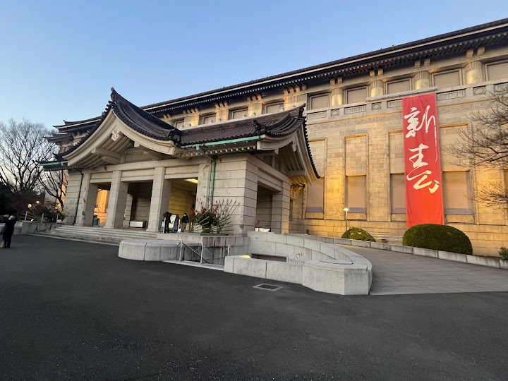
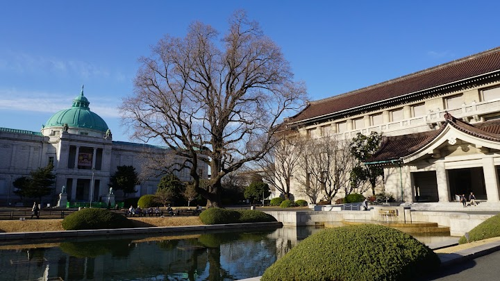
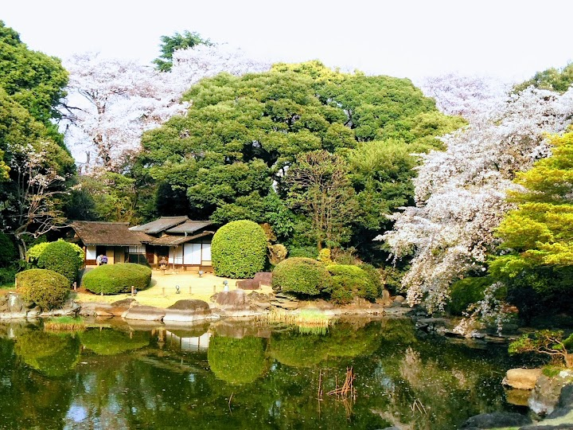
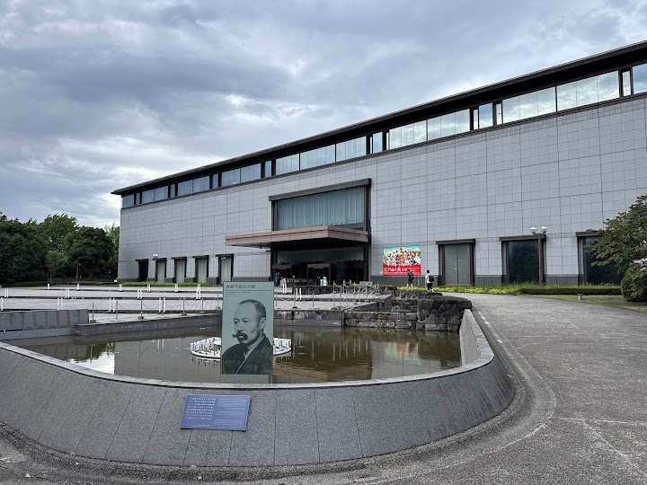
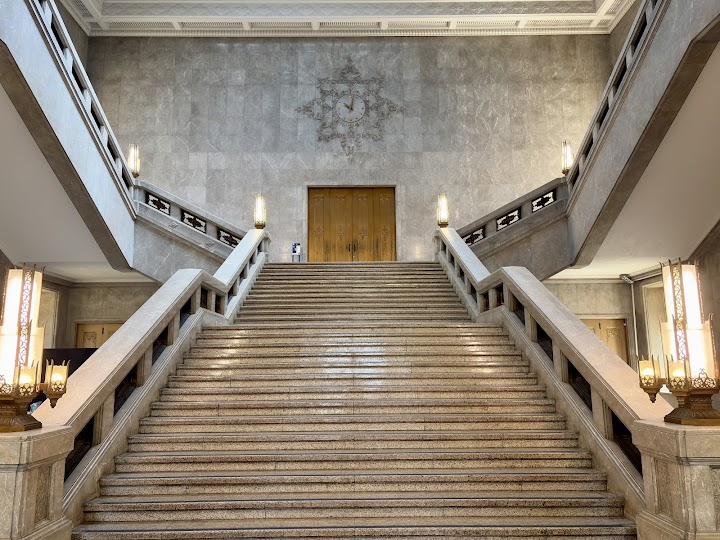

Tokyo National Museum and Ueno Park (suggested)
Stately museum complex devoted to the art & antiquities of Japan, as well as other Asian countries.
Open in Google Maps (street view, more photos and reviews there)






Visitor tips on finding it and getting there
I visited the Tokyo National Museum in January 2025, and it was one of the most impressive museums I’ve ever explored. Located in Ueno Park, the museum complex is very huge and filled with an incredible range of collections. I really enjoyed exploring the exhibits, which cover Japanese history from ancient times to the modern era. One of the highlights for me was the collection of kimono—some of them were truly luxurious, especially those once worn by royalty. The museum is quite large, and I spent more than two hours there, but honestly, it still didn’t feel like enough time. There is just
Located in Ueno park the walk up to the museum is beautiful. Walking around the grounds of the museum itself is very pleasant as they are well kept. The Honkan building which is in the centre of the courtyard and looks very traditional. This was my favourite part of the visit. Seeing the extensive collection of Japanese heritage, artwork and history was a highlight of our trip. The katanas and pottery were incredible
This museum is absolutely massive and a must-visit if you want to learn about Japanese history and culture! The collection here is unbelievable. They have everything from ancient samurai armor and swords to beautiful pottery, kimono, and woodblock prints. The main building (Honkan) is beautiful both inside and out, and there is a really peaceful pond and garden area where you can walk around. Everything is very well laid out, and almost all of the descriptions have English translations, which makes it super easy to understand what you're looking at. It's located right in Ueno Park, so it's r